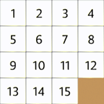
The 15-puzzle consists of 15 identically-sized square tiles numbered 1 through 15
arranged in a square in consecutive order from left to right and top to bottom
with one blank space as shown in the
image above. To play the puzzle, one starts by scrambling the tiles and then
attempting to return it to the initial state using the smallest number
of moves, where a move consists of sliding an adjacent tile into the blank space.
For more information, see the
Wikipedia article.
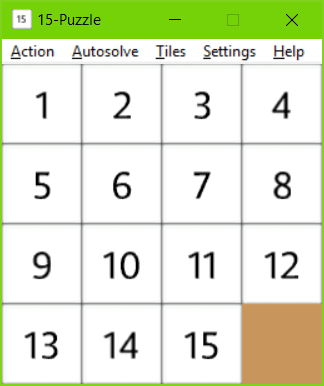
To move a tile into the blank space, left-click on it with the mouse
or use the keyboard to move the blank one place left, right, up and down
by pressing the corresponding arrow key. That means, for example, that
hitting the left arrow key will move the tile immediately
to the left of the blank (if it exists) rightwards.
The ASDW keys work similarly, with 'A' moving the blank left,
'D' moving it right, 'W' moving it up, and 'S' moving it down
(in correspondence with their relative position on the keyboard.
Other features are accessible through a menu bar at the top of the window,
which is divided into five menus,
Action,
Autosolve,
Tiles,
Settings,
and
Help,
each of which will be described later in a separate section.
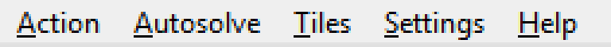
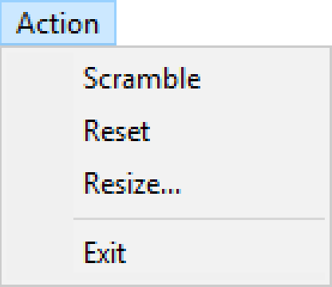
Scramble and Reset
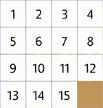
Choosing Scramble from the Action menu randomizes the tiles. Reset
puts them back in their original positions. The above animation shows
the tiles being scrambled and then reset.
Resize
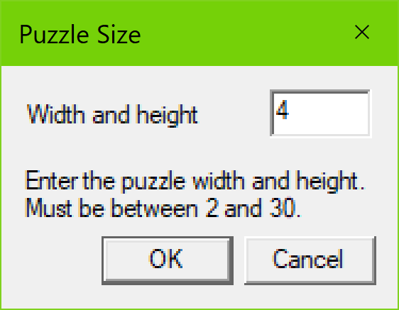
Choosing Resize from the Action menu pops up the Resize dialog box
shown above,
which allows you to resize the puzzle anywhere from 2x2 to 30x30.
The following image shows a 99-puzzle, which is 10x10.
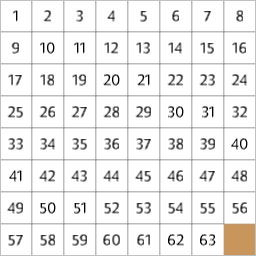
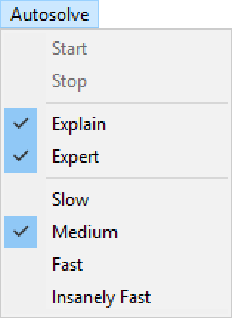
Start and Stop
Selecting Start from the Autosolve menu will start solving the puzzle
automatically using the algorithm described in
[1].
Selecting Stop from the Autosolve menu will stop it.
Explain

Checking Explain on the Autosolve menu will cause the autosolve algorithm to explain
what it is doing by lighting up in red the tiles that it is currently
working on. Tiles that are out of place will be
darkened slightly. The above animation shows this process on a 4x4 puzzle.
Expert
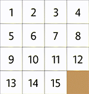
Checking Expert on the Autosolve menu will cause autosolve to find a
solution that takes fewer moves using
the algorithm from [2] on a 4x4 puzzle (or sub-puzzle).
The above animation shows autosolve in expert mode.
Animation Speed
Clicking on entries Slow, Medium, Fast, and Insanely Fast on the Autosolve menu will cause
the autosolve animation to run, respectively, slow, medium, fast, and
insanely fast.
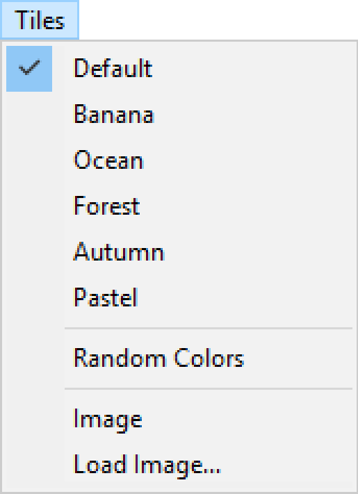
Color Schemes
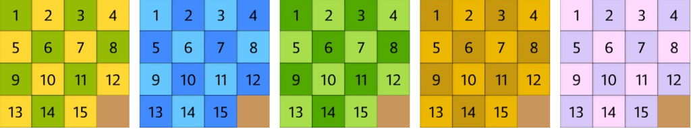
Checking Banana, Ocean, Forest, Autumn, and Pastel
in the Tiles menu will cause to the tiles to be colored as shown in the
above image, respectively from left to right.
Checking Random will generate a new random pair of colors each time it is clicked.
Checking Default will
revert the tiles back to white.
Image
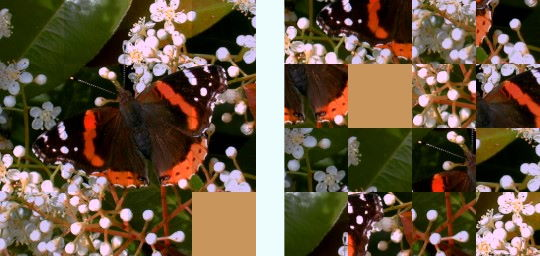
Checking Image on the Tiles menu will replace the tiles by portions of
an image of a butterfly as shown in the above image (unscrambled on the
left and scrambled on the right).
Load Image
Selecting Load Image on the Tiles menu will pop up an Open File
dialog box that lets you select a jpg, png, or bmp image to replace
the default butterfly image. If your image is rectangular, then the
center of the image is used as shown below.
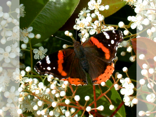
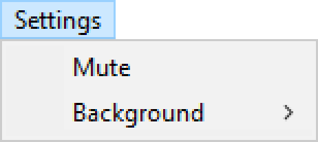
Mute
Checking Mute on the Settings menu will mute all sounds from this app.
Background
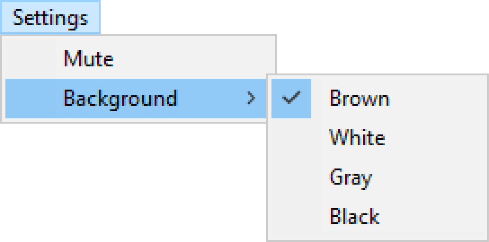
Selecting Background on the Settings menu will pop up a sub-menu where you can select
a brown, white, gray, or black background, as shown in the image below.
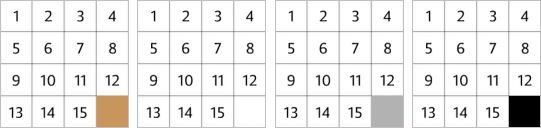
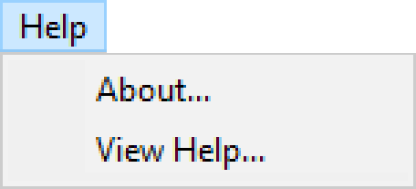
Clicking About on the Help menu will display the About dialog box and
clicking View Help will open this document on your default web browser.